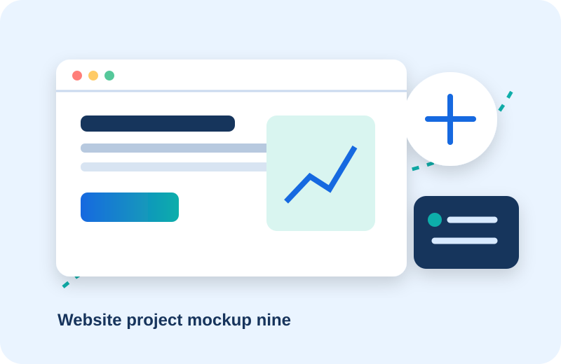

Northline Realty
Real Estate · Lead Generation
Challenge, solution, key features, and a realistic result summary.
Portfolio
These illustrative concepts show how we approach different industries and requirements.
Real Estate · Lead Generation
Challenge, solution, key features, and a realistic result summary.
Insurance · Business Website
Challenge, solution, key features, and a realistic result summary.
Home Services · Booking Website
Challenge, solution, key features, and a realistic result summary.
Professional Services · Lead Generation
Challenge, solution, key features, and a realistic result summary.
Ecommerce · Ecommerce
Challenge, solution, key features, and a realistic result summary.
Medical · Booking Website
Challenge, solution, key features, and a realistic result summary.
Support · AI Chatbot
Challenge, solution, key features, and a realistic result summary.
Local Business · Website Redesign
Challenge, solution, key features, and a realistic result summary.

Consulting · Business Website
Challenge, solution, key features, and a realistic result summary.